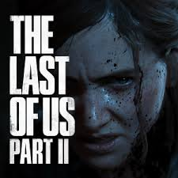

The Last of Us Part II es un juego de acción y aventura de supervivencia desarrollado por Naughty Dog y publicado por Sony Interactive Entertainment en 2020. Ambientado en un mundo postapocalíptico devastado por una infección fúngica, el jugador sigue la historia de Ellie mientras busca venganza y lucha por sobrevivir en un entorno hostil lleno de infectados y humanos peligrosos. El juego combina exploración, sigilo, combate, resolución de acertijos y narrativa profunda con un fuerte enfoque en el desarrollo emocional de los personajes.
Naughty Dog, el estudio detrás de la saga, utiliza su propio motor para ofrecer gráficos detallados, animaciones realistas y escenarios inmersivos. La atención al detalle en los entornos, la inteligencia artificial de enemigos y aliados, y la narrativa cinematográfica hacen que la experiencia sea altamente envolvente y emocionalmente impactante.
Desde su lanzamiento, The Last of Us Part II ha recibido actualizaciones que incluyen correcciones de errores, mejoras de rendimiento y ajustes en la jugabilidad, además de contenidos adicionales como modos de dificultad, mejoras en accesibilidad y soporte para funciones de consolas más recientes, manteniendo el juego relevante y accesible para nuevos jugadores y veteranos de la saga.